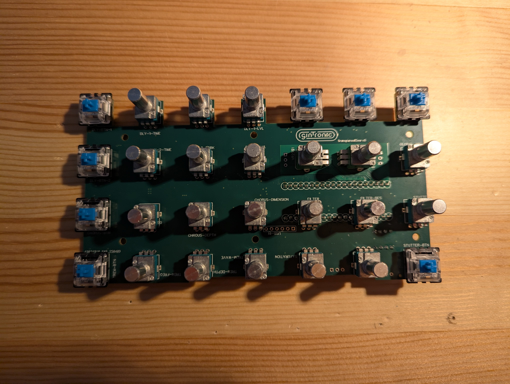
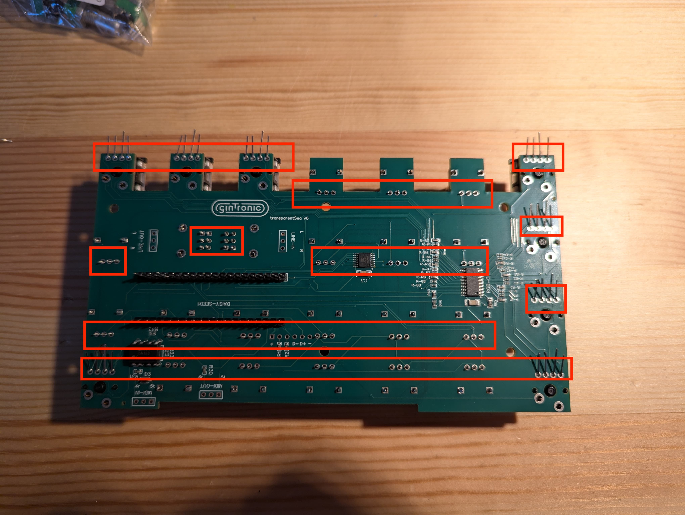

In this step you should solder the 2 20 pin headers from the daisy seed to the bottom of the board (applying solder to the top of the board).
IMPORTANT: the longer pins of the headers should be on the bottom of the board.
NOTE: It could be that the ground pin is a little harder to solder as it is attached to an analog ground plane, if this is the case, increase the soldering iron temp to around 380/400 and allow a little more time for it to heat up.
Unscrew the nuts and washers from the pots and keep them to one side then attach (don't solder yet) the 17 B10K pots to the top side of the board. They should clip in and stay clipped in. If the pins or legs of the pots are bend and not going in easily, use pliers to adjust them gently. See the diagram showing where to place them.
IMPORTANT: The analog IN, OUT and FILTER Pots are different, do not get them confused. Check the diagram to see where to attach.
NOTE: Keep the nut
Unscrew the nuts and washers from the 2 stereo pots and attach them in the same way as the other pots.

Unscrew the washer and nut from the pot and attach it to the filter position.
IMPORTANT: Make sure the pot has a center detent!
Simply press the switches into position, they should be flush against the board.
IMPORTANT: Sometimes they come with the pins a little bent, check before pushing and straighten gently with pliers if necessary.
The MX Blue switches have special slots for the LEDS and the legs of the LEDs go through the slot and then through the 4 holes in the PCB under the slot.
IMPORTANT: The LEDs have 4 legs, the longer leg should be on the left side. See images and make sure they are correctly rotated!
Once the LED legs are through and the LED sits nicely in the slot, bend the legs back to hold it into place.
Once all the pots, switches and LEDs are attached, check that all the pots are as well aligned as you can get them (see images for examples). They don’t have to be perfect, but should be as good as you can get them.
Once you are happy, turn the PCB over and rest the PCB on the heads of the pots.
From this point on, be gentle with the PCB so not to knock any pots out of position.
Perhaps a special Jig would be good to hold the upside down pcb and keep all the pots in position at this point?
Now you are ready to solder all the small connections. This means:
Use the thin solder.
Now solder the pins of the MX switches using the thicker solder.
Now solder the legs of the pots using the thicker solder.

Using the clippers, snip of most of the LED legs.
IMPORTANT: Do not clip too close to the board or you risk breaking the joint near the base of the leg.
Take the daisy seed out of the anti static packet and plug it into your computer. One LED should blink.
Then disconnect it and attach it to the pins on the PCB. The USB port should face the center of the PCB.
Solder the 40 pins using thin solder.
IMPORTANT: Be very careful with the soldering iron in this step. The daisyseed could be damaged leaving the entire board useless.
NOTE: The daisy seed will not sit flush with the pins, this is normal and not a problem.
Upload the daisy bootloader here: https://flash.daisy.audio/
Upload the testing firmware here: Testing Firmware
Go to https://gintronic-io.github.io/tsFactoryTest/ and test the pots
Press each button and hold it until you have seen the LED flash Red, Green and Blue.
Once you are happy that everything works, upload the production firmware found here: Production Firmware
WARNING: PLEASE MAKE SURE YOU HAVE SOME BUBBLE WRAP UNDER THE ENCLOSURE AT ALL TIMES SO NOT TO SCRATCH THE PAINT!
Push the buttons and pots through the holes of the enclosure and attach a few of the pots with the nuts gently by hand just to get the PCB into place.
Then attach each pot to the enclosure using the nuts from before and the wrench.
IMPORTANT: DO NOT PRESS DOWN WITH THE WRENCH OR YOU WILL MARK THE PAINT OF THE ENCLOSURE. IT IS ENOUGH JUST TO TURN THE WRENCH GENTLY. THE NUTS DO NOT NEED TO BE SUPER TIGHT.
Left channel = yellow
Right channel = red
Ground = black
Around 13cm should be enough for each wire, you will trim them to fit a little later.
Screw in the Power button and add the USB socket. Make sure to align the USB socket with the red wire closest to the Power button.

WARNING: IN THE IMAGE PROVIDED THE USB SOCKET IS THE WRONG WAY ROUND!!! I ONLY RECENTLY LEARNED THAT I SHOULD TRIP THE LIVE WIRE WITH THE POWER SWITCH AND NOT THE GROUND :D
First apply solder to the pads so that they are covered, then one by one, reheat that solder and push the correct wire through.
IMPORTANT: MAKE SURE TO ADD HEAT SHRINK TO THE WIRE BEFORE SOLDERING. ALSO DON'T MAKE THE EXPOSED WIRE TOO LONG OR THEY MAY TOUCH IN THE OTHER SIDE WITHOUT YOU KNOWING.
First apply solder to the pads so that they are covered, then one by one, reheat that solder and push the correct wire through.
With MIDI, yellow wire = 5, red wire = 4, black wire = ground
IMPORTANT: MAKE SURE TO ADD HEAT SHRINK TO THE WIRE BEFORE SOLDERING. ALSO DON'T MAKE THE EXPOSED WIRE TOO LONG OR THEY MAY TOUCH IN THE OTHER SIDE WITHOUT YOU KNOWING.
Sorry, no image available yet
Using the same technique as with the TRS wires, attach the following:
Cut the red wire from the USB socket short and solder it to one leg of the power button (don’t forget to use heat shrink). Then with a new wire, solder the other leg of the power button to the V+ pad of the USB section.
Attach the lid to the bottom of the enclosure and screw it together. Paint may be in the screw holes so this might be difficult.
IMPORTANT: DO NOT FORGET TO HAVE SOME KIND OF PROTECTION FOR THE ENCLOSURE ON YOUR WORK DESK AT ALL TIMES TO AVOID SCRATCHES IN THE PAINT.
Turn every pot all the way to the left and attach the knobs as seen in the image.